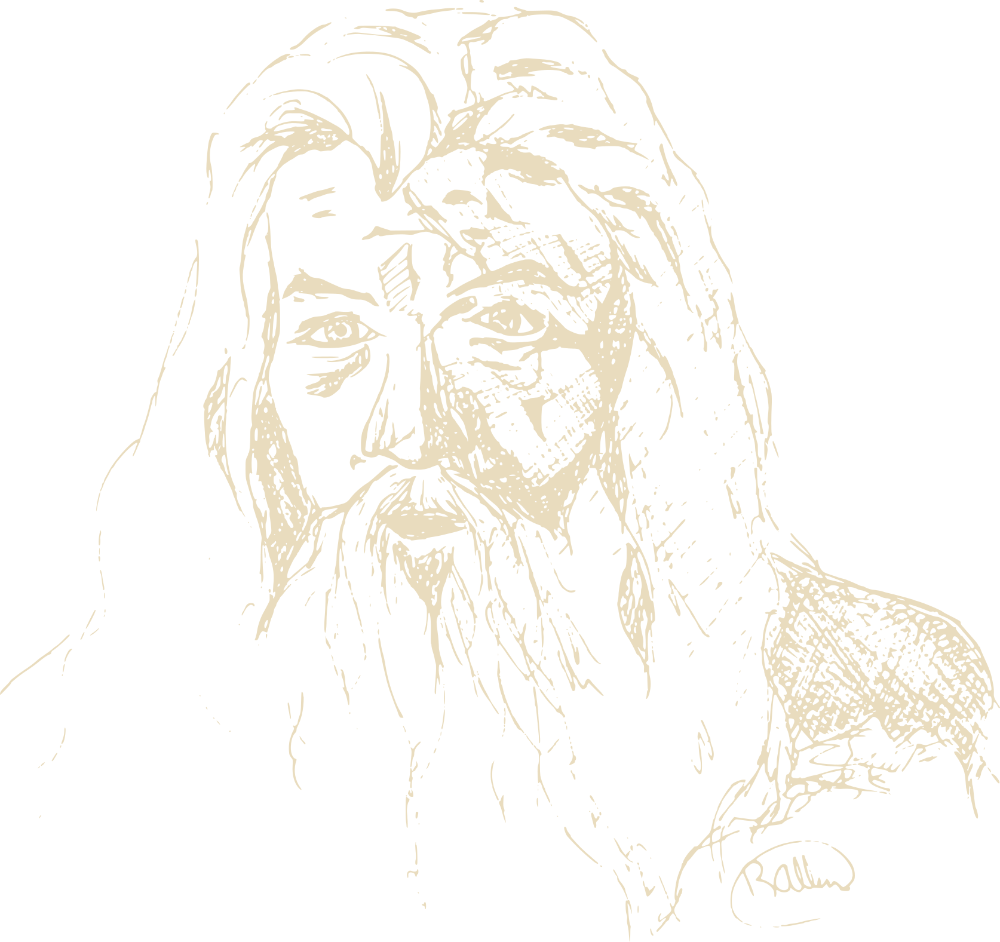

Wees op tijd
Deur open om 08:00 voor First & Second Breakfast. Om 08:35:38 gaat het licht uit — dan wachten we op niemand meer. Een tovenaar komt nooit te laat; een gast wel.
Zaterdag 24 oktober 2026
Eén dag. Drie films. Zeven maaltijden.
Negen wandelaars, en een bank.
Op 24 oktober vieren we Gandalf Day. Waarom die datum? Omdat Gandalf in Rivendell tegen Frodo zegt dat het tien uur 's morgens is op 24 oktober — en als we om 08:35:38 op play drukken, zegt hij dat precies wanneer het dat ook echt is.

24 oktober 2026 · 08:35:38 · Nederlandse tijd
De klok wordt opgewonden…
Kijk erin. Op eigen risico.
…
…
Zeven maaltijden, zoals het een hobbit betaamt. En toevallig ook drie films.
Klik op een filmblok om te zien welk stuk Midden-aarde je op dat moment doorkruist.
Negen wandelaars, tegenover negen Ringgeesten. Kies er één en volg hem op de kaart.
Kies een reisgezel — of een filmdeel — en de route tekent zichzelf.
Klik op een plaats voor meer.
Gondor roept om hulp. Steek het eerste baken aan.
Deur open om 08:00 voor First & Second Breakfast. Om 08:35:38 gaat het licht uit — dan wachten we op niemand meer. Een tovenaar komt nooit te laat; een gast wel.
Een kussen, een dekentje, warme sokken. Je zit hier ruim veertien uur. Dit is geen filmavond, dit is een expeditie.
Zeven maaltijden, van First Breakfast tot Supper. Meld allergieën en dieetwensen ruim van tevoren — Sam plant graag vooruit.
Telefoons in de Zak van Bilbo. Geen spoilers voor wie het nog niet kent (die bestaan echt). En niemand zegt “dit is toch niet in het boek”.
Uiteraard. Alle drie de films in de lange versie, in zes delen met pauzes ertussen. De pauzes zijn geen suggestie.
Download de hele dag als agenda-bestand, inclusief alle pauzes en maaltijden.